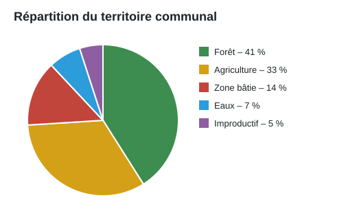

Notre commune en chiffres
La commune s'étend sur 1 240 hectares, entre le lac et la lisière du Jura.

Contact
Ville de Bourg-Modèle
Route de la Fontaine 3
Téléphone 027 000 15 50
info@ville-de-bourg-modele.example
Personne de contact
Marc Modèle, secrétariat
Téléphone 027 000 15 50